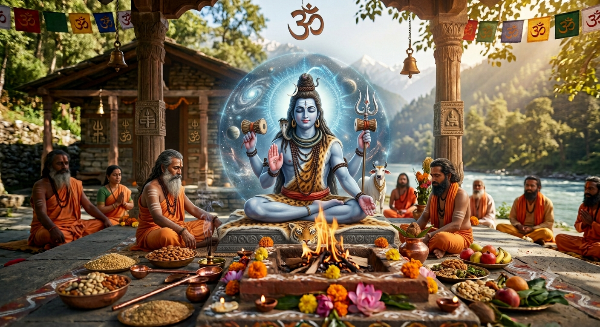

🔱 ॐ नमः शिवाय • ॐ गुरवे नमः
स्वस्तिवाचन
हरि: ॐ
स्वस्ति न इन्द्रो वृद्धश्रवाः ।
स्वस्ति नः पूषा विश्ववेदाः ।
स्वस्ति नस्तार्क्ष्यो अरिष्टनेमिः ।
स्वस्ति नो बृहस्पतिर्दधातु ॥
ॐ शान्तिः शान्तिः शान्तिः
शिवमंगल
ॐ नमः शम्भवाय च मयोभवाय च।
नमः शङ्कराय च मयस्कराय च।
नमः शिवाय च शिवतराय च॥
शिव-गुरु वन्दना
ॐ नमः शिवाय गुरवे, सच्चिदानन्द मूर्तये।
निष्प्रपञ्चाय शान्ताय, निरालम्बाय तेजसे॥
ॐ सह नाववतु। सह नौ भुनक्तु।
सह वीर्यं करवावहै।
तेजस्वि नावधीतमस्तु मा विद्विषावहै।
ॐ शान्तिः शान्तिः शान्तिः
गुरु मन्त्र
गुरु ब्रह्मा गुरु विष्णु गुरुदेवो महेश्वरः।
गुरु साक्षात् परब्रह्म तस्मै श्री गुरवे नमः॥
त्वमेव माता
त्वमेव माता च पिता त्वमेव,त्वमेव बन्धुश्च सखा त्वमेव
त्वमेव विद्या द्रविणम् त्वमेव, त्वमेव सर्वम् मम देव देव॥
महामृत्युञ्जय मन्त्रः
ॐ त्र्यम्बकं यजामहे सुगन्धिं पुष्टिवर्धनम्।
उर्वारुकमिव बन्धनान्मृत्योर्मुक्षीय माऽमृतात्॥
कर्पूरगौरं
कर्पूरगौरं करुणावतारं संसारसारम् भुजगेन्द्रहारम्।
सदावसन्तं हृदयारविन्दे भवं भवानीसहितं नमामि॥
🙏 क्षमा प्रार्थना • आत्मसमर्पण
शिव क्षमा प्रार्थना
करचरणकृतं वाक्कायजं कर्मजं वा,
श्रवणनयनजं वा मानसं वापराधम्।
विहितमविहितं वा सर्वमेतत्क्षमस्व
जय जय करुणाब्धे श्रीमहादेव शम्भो॥
पूजा-विधि न्यूनताको क्षमायाचना
आवाहनं न जानामि नैव जानामि पूजनम्।
विसर्जनं न जानामि क्षमस्व परमेश्वर॥
मन्त्रहीनं क्रियाहीनं भक्तिहीनं सदाशिव।
यत्पूजितं मया देव परिपूर्णं तदस्तु मे॥
आत्मसमर्पण
पापोहं पाप कर्माहं, पापात्मा पाप संभवः
त्राहिमाम पार्वतीनाथ, सर्वपापहरो भव ॥
सर्वसमर्पण
कायेन वाचा मनसेन्द्रियैर्वा
बुद्ध्यात्मना वा प्रकृतेः स्वभावात्।
करोमि यद्यत्सकलं परस्मै
श्रीसदाशिवाय समर्पयामि॥
मङ्गलाचरण
विघ्नविनाशक रिद्धि–सिद्धिसहितका श्री गणेश भगवानको
— जय
गुरूणां गुरुः, मङ्गलस्वरूप श्री साम्ब सदाशिव भगवानको
— जय
पञ्चायतन
श्री गणेश भगवानको
— जय
जगत्साक्षी श्री सूर्यनारायण भगवानको
— जय
आदिशक्ति भगवती जगदम्बा माताको
— जय
श्री लक्ष्मीनारायण भगवानको
— जय
सृष्टि–स्थिति–लयस्वरूप ब्रह्मा, विष्णु तथा महेश्वर भगवानको
— जय
परमतत्त्व शिव
गुरुहरूको गुरु आदि गुरु दक्षिणामूर्ति भगवानको
— जय
अर्धनारीश्वर स्वरूप भगवान शङ्करको
— जय
पञ्चब्रह्म तथा पञ्चभूतस्वरूप भगवान शिवको
— जय
अष्टमूर्ति तथा एकादश रुद्रस्वरूप भगवानको
— जय
महाकाल, कालभैरव तथा सर्वव्यापक लिङ्गस्वरूप भगवानको
— जय
नन्दीश्वर, भृङ्गी तथा सम्पूर्ण शिवगणको
— जय
गुरु–ऋषि परम्परा
महर्षि वेदव्यास भगवानको
— जय
जगद्गुरु श्रीमदाद्य शङ्कराचार्य महाराजको
— जय
सनक, सनन्दन, सनातन, सनत्कुमार तथा मार्कण्डेयादि शिवभक्त ऋषि–मुनिहरूको
— जय
सम्पूर्ण सिद्ध, योगी, तपस्वी तथा सन्त–महात्माहरूको
— जय
वैदिक–शास्त्रीय परम्परा
चारै वेद तथा सम्पूर्ण वेदाङ्गहरूको
— जय
श्रीरुद्रम्, रुद्राध्याय तथा सम्पूर्ण वैदिक मन्त्रपरम्पराको
— जय
सम्पूर्ण उपनिषद्, आगम तथा पुराण शास्त्रहरूको
— जय
अमोघ पञ्चाक्षरी महामन्त्र “ॐ नमः शिवाय” को
— जय
देवशक्ति
सम्पूर्ण देवी–देवता तथा नवग्रह देवताहरूको
— जय
दशदिक्पाल, अष्टमातृका, अष्टभैरव तथा क्षेत्रपालहरूको
— जय
पावन शिवधाम
श्री कैलाश मानसरोवर धामको
— जय
द्वादश ज्योतिर्लिङ्ग तथा सम्पूर्ण पावन शिवधामहरूको
— जय
श्री काशी विश्वनाथ तथा श्री केदारनाथ धामको
— जय
राष्ट्रदेव श्री पशुपतिनाथ भगवानको
— जय
समष्टि
सम्पूर्ण तीर्थ, देवक्षेत्र तथा शक्तिपीठहरूको
— जय
सम्पूर्ण इष्टदेवता, कुलदेवता तथा ग्रामदेवताहरूको
— जय
सम्पूर्ण पितृ, मातृदेवता तथा गौमाताको
— जय
सत्य सनातन वैदिक धर्म तथा समस्त भक्तजन–साधकहरूको
— जय
परम समापन
अखण्ड सच्चिदानन्द परब्रह्म परमेश्वर श्री साम्ब सदाशिव भगवानको
— जय